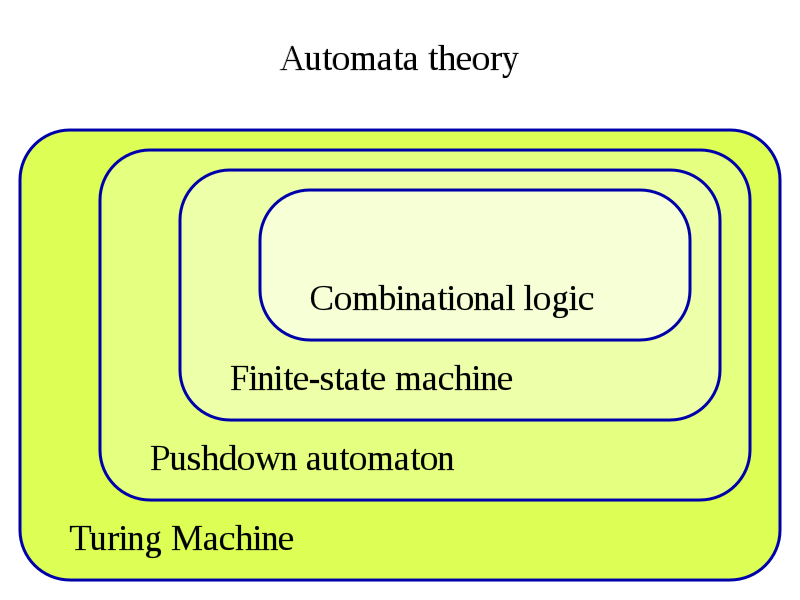

Automata Theory
Automata theory is the study of abstract machines and automata, as well as the computational problems that can be solved using them. It is a theory in theoretical computer science and discrete mathematics (a subject of study in both mathematics and computer science). The word automata (the plural of automaton) comes from the Greek word αὐτόματα, which means "self-acting".

The figure above illustrates a finite-state machine, which belongs to a well-known type of automaton. This automaton consists of states (represented in the figure by circles) and transitions (represented by arrows). As the automaton sees a symbol of input, it makes a transition (or jump) to another state, according to its transition function, which takes the current state and the recent symbol as its inputs.
Automata theory is closely related to formal language theory. An automaton is a finite representation of a formal language that may be an infinite set. Automata are often classified by the class of formal languages they can recognize, typically illustrated by the Chomsky hierarchy, which describes the relations between various languages and kinds of formalized logic.
Automata play a major role in theory of computation, compiler construction, artificial intelligence, parsing and formal verification.
Finite State Machines
A finite-state machine (FSM) or finite-state automaton (FSA, plural: automata), finite automaton, or simply a state machine, is a mathematical model of computation. It is an abstract machine that can be in exactly one of a finite number of states at any given time. The FSM can change from one state to another in response to some external inputs; the change from one state to another is called a transition. An FSM is defined by a list of its states, its initial state, and the conditions for each transition. Finite state machines are of two types - deterministic finite state machines and non-deterministic finite state machines.[1] A deterministic finite-state machine can be constructed equivalent to any non-deterministic one.
The behavior of state machines can be observed in many devices in modern society that perform a predetermined sequence of actions depending on a sequence of events with which they are presented. Simple examples are vending machines, which dispense products when the proper combination of coins is deposited, elevators, whose sequence of stops is determined by the floors requested by riders, traffic lights, which change sequence when cars are waiting, and combination locks, which require the input of combination numbers in the proper order.
The finite state machine has less computational power than some other models of computation such as the Turing machine.[2] The computational power distinction means there are computational tasks that a Turing machine can do but a FSM cannot. This is because a FSM's memory is limited by the number of states it has. FSMs are studied in the more general field of automata theory.
Cellular Automata
A cellular automaton consists of a regular grid of cells, each in one of a finite number of states, such as on and off (in contrast to a coupled map lattice). The grid can be in any finite number of dimensions. For each cell, a set of cells called its neighborhood is defined relative to the specified cell. An initial state (time t = 0) is selected by assigning a state for each cell. A new generation is created (advancing t by 1), according to some fixed rule (generally, a mathematical function)[3] that determines the new state of each cell in terms of the current state of the cell and the states of the cells in its neighborhood. Typically, the rule for updating the state of cells is the same for each cell and does not change over time, and is applied to the whole grid simultaneously,[4] though exceptions are known, such as the stochastic cellular automaton and asynchronous cellular automaton.
The concept was originally discovered in the 1940s by Stanislaw Ulam and John von Neumann while they were contemporaries at Los Alamos National Laboratory. While studied by some throughout the 1950s and 1960s, it was not until the 1970s and Conway's Game of Life, a two-dimensional cellular automaton, that interest in the subject expanded beyond academia. In the 1980s, Stephen Wolfram engaged in a systematic study of one-dimensional cellular automata, or what he calls elementary cellular automata; his research assistant Matthew Cook showed that one of these rules is Turing-complete. Wolfram published A New Kind of Science in 2002, claiming that cellular automata have applications in many fields of science. These include computer processors and cryptography.
 A "glider gun" used in Conway's Game of Life
A "glider gun" used in Conway's Game of Life
The primary classifications of cellular automata, as outlined by Wolfram, are numbered one to four. They are, in order, automata in which patterns generally stabilize into homogeneity, automata in which patterns evolve into mostly stable or oscillating structures, automata in which patterns evolve in a seemingly chaotic fashion, and automata in which patterns become extremely complex and may last for a long time, with stable local structures. This last class are thought to be computationally universal, or capable of simulating a Turing machine. Special types of cellular automata are reversible, where only a single configuration leads directly to a subsequent one, and totalistic, in which the future value of individual cells only depends on the total value of a group of neighboring cells. Cellular automata can simulate a variety of real-world systems, including biological and chemical ones.